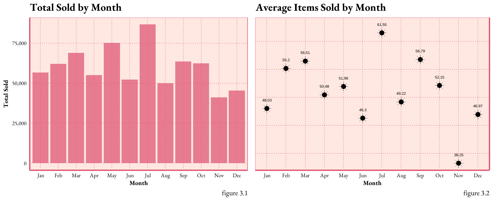
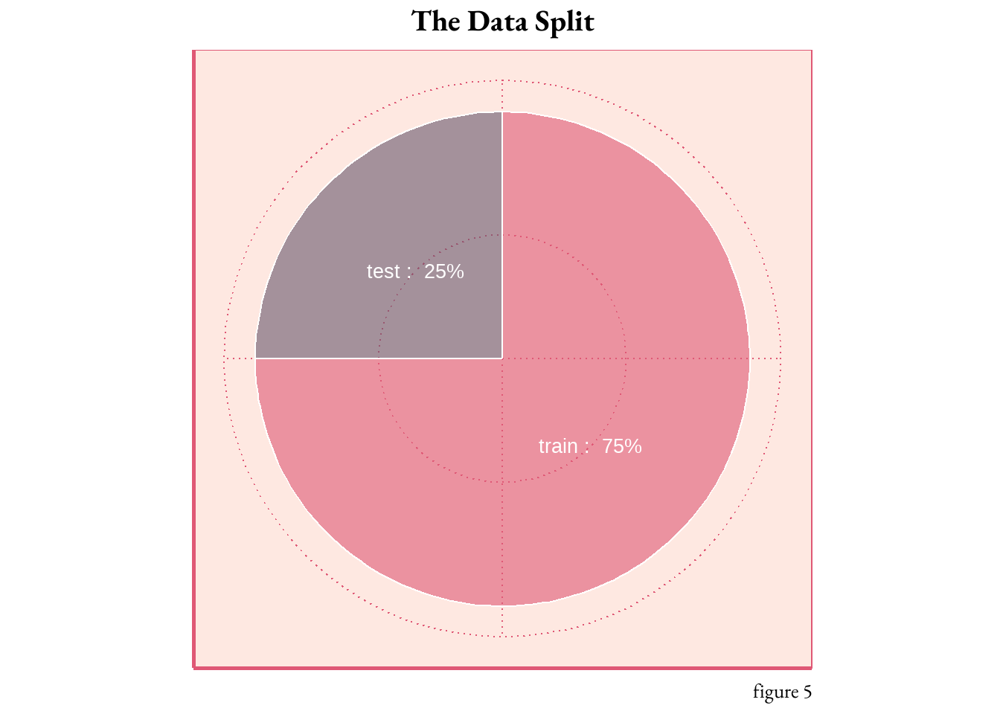
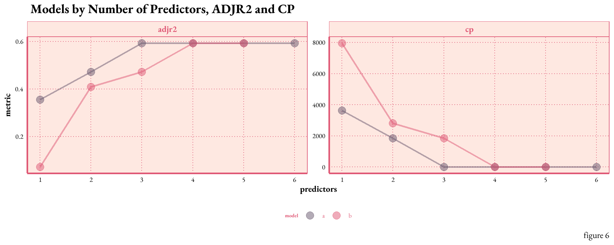
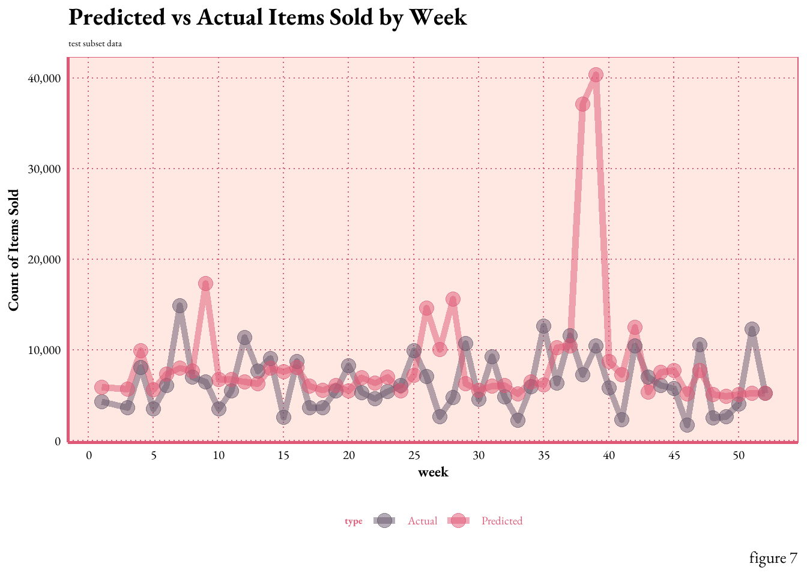

This digital portfolio stands as a testament to my proficiency in applied statistical methods and showcases my capacity for ongoing growth and adaptability in the ever-evolving domains of data science and machine learning. During the summer semester of 2023, I not only expanded my statistical knowledge but also cultivated my craft of data storytelling.
At its heart, this project is one hypothetical case study for predictive statistical modeling. Leveraging the R programming language, I conducted model selection and broadened my expertise in data wrangling, visualization, and design aesthetics.
More specifically, this document guides you through a time series inventory prediction— the art of anticipating future consumer demand. Ultimately, it demonstrates how data empowers the decision-making process through forecasting and strategic insights. And remember,
Summary
Objective
evaluate and deploy a predictive model to forecast the inventory volume.
Limitations
the data set contains only spans 54 weeks, which is less than ideal for time series predictions that typically benefit from multi-year trends. Additionally, my understanding of the data is limited. For this project, I made certain assumptions about the time frame and inventory type. In practical scenarios, collaboration with domain experts are essential components of any predictive analytics project.
Final Results
The Poisson regression model demonstrated reasonable predictive performance, using four predictors chosen through stepwise selection.
The inventory data is comprised of 488 distinct items, sold over a span of 54 weeks (from week 0 to 53), with an impressive sum of approximately 1.3 million units transacted.
Below, I’ve created several visualizations to discern patterns, identify anomalies, and appreciate the overall behavior of the inventory data over time while establishing a baseline familiarity for the predictive analysis.
Code
# import datasai <-read.csv("inventory.csv")# import my custom theme :-)source("artNov_theme.R")hist <- sai %>%group_by(item_no) %>%summarise(total_sold =sum(sold)) %>%ggplot(aes(x = total_sold)) +geom_histogram(binwidth =2100, color ="black", fill ="#7D998F", alpha = .6) +scale_x_continuous(labels = scales::comma_format()) +labs(x ="Number of Items Sold", y ="Frequency", title ="Number of Items Sold by Item Type", caption =" figure 1.1")+theme_art_nouveau()hist1 <- sai %>%group_by(week) %>%summarise(total_sold =sum(sold)) %>%ggplot(aes(x = total_sold)) +geom_histogram(binwidth =2100, color ="black", fill ="#68576D", alpha = .6) +scale_x_continuous(labels = scales::comma_format()) +scale_y_continuous(position ="right") +labs(x ="Number of Items Sold", title ="Number of Items Sold by Week",caption =" figure 1.2")+theme_art_nouveau()# display the histograms side by sidegridExtra::grid.arrange(hist, hist1, ncol =2)
figure 1.The histograms demonstrate the distribution of the dataset by variable. Figure 1.1 plots the frequency of each item sold, with most items ranging between 500 and 1,300 in total. Figure 1.2 conveys the temporal dispersion of weekly sales. Both graphs exhibit a right skew, particularly pronounced in figure 1.1, implying a scarcity of high-sales items or weeks; both appear to have a poisson distribution.
Code
line1 <- sai %>%group_by(week) %>%summarise(total_sold =sum(sold)) %>%ggplot(aes(x = week, y = total_sold)) +geom_line(size =2, alpha =0.5, color ="#DF5875") +geom_point(size =4, alpha =0.5, color ="#DF5875")+geom_area(fill ="#DF5875", alpha =0.4) +scale_x_continuous(breaks =seq(0, 55, by =5)) +scale_y_continuous(labels = scales::comma_format()) +labs(x ="week", y ="Count of Items Sold", title ="Number of Items Sold by Week",caption =" figure 2")+theme_art_nouveau()line1
figure 2.shows annual sales trends on a weekly cadence. Weekly sales fluctuate within a range of 10k to 50k items, with the majority hovering between ~20k and ~30k units sold. A sales peak is observed in week 20, while week 46 registers the slowest sales activity.
Data Processing
The new features (see data dictionary), reveal sales dynamics, exposing potential seasonal pattern influences. Ideally, this process includes consultation with domain experts to ensure predictor viability and relevance.
data dictionary
Original
item_no: the unique identifier for each item
sold: count of items_no sold
week: the week number.
I assume the following dates for the data:
startingweek 0: December 27, 2021 - January 2, 2022
endingweek 53: December 26, 2022 - January 1, 2023
Feature Engineered
year_total: the total number of items sold for each item over the entire year
date: The specific date corresponding to the first day of the week
month: the month corresponding to the first day of the week
lag1: period for capturing seasonality or time-dependent patterns, item’s sold from the previous week
lag2: item’s sold from two-weeks prior
rolling_4wk_avg: the average number of items sold over the past four weeks by item_no
best_seller: a binary variable indicating whether the item is one of the top ten best-selling items based on volume
Code
###### create the variables# total yearly sales for each iteminventory_sum <- sai %>%group_by(item_no) %>%summarise(year_total =sum(sold), .groups ="drop")sai <-left_join(sai, inventory_sum, by =c("item_no"))#### calculate the top 10% thresholdtop_10_threshold <-quantile(sai$year_total, 0.9)# dummy variable for bestsellers 1= yes 0 = nosai <- sai %>%mutate(best_seller =ifelse(year_total >= top_10_threshold, 1, 0))## figure out month an year for data, assuming the data is from 2022# week 0: December 27, 2021 - January 2, 2022# week 52: December 19, 2022 - December 25, 2022# week 53: December 26, 2022 - January 1, 2023sai$year <-2022sai <- sai %>%mutate(calendar_week =ifelse(week ==0, 52, ifelse(week ==53, 1, week)),calendar_year =ifelse(week ==0, year -1, ifelse(week ==53, year +1, year)))# Now use calendar_year and calendar_week in the MMWRweek2Date functionsai$date <-MMWRweek2Date(sai$calendar_year, sai$calendar_week)# find the year the week ends in, so we can figure out monthssai <- sai %>%mutate(wk_ending_year =ifelse(week %in%c(0, 53), year +1, year),week =ifelse(week ==53, 1, week))# create teh data and extract the month# wanted month to be quantitative to reduce model complexitysai$date <-MMWRweek2Date(sai$wk_ending_year, sai$calendar_week)sai$month <-month(sai$date, label =TRUE)sai$month <-month(sai$date)# create lag periods# https://www.youtube.com/watch?v=Kn3llTjYS5Esai <- sai %>%mutate(lag1 =lag(sold, 1),lag2 =lag(sold, 2))# https://www.rdocumentation.org/packages/zoo/versions/1.8-12/topics/rollmeansai <- sai %>%group_by(item_no) %>%mutate(rolling_4wk_avg = zoo::rollmean(sold, k =4, fill =NA, align ="right")) %>%ungroup()write.csv(sai, "FEinventory.csv")month_abbreviations <-c("Jan", "Feb", "Mar", "Apr", "May", "Jun", "Jul", "Aug", "Sep", "Oct", "Nov", "Dec")sai_average <- sai %>%filter(wk_ending_year ==2022) %>%group_by(month) %>%summarise(month_average =mean(sold))bar <- sai %>%filter(wk_ending_year ==2022) %>%mutate(month =factor(month, levels =1:12, labels = month_abbreviations)) %>%ggplot(aes(x = month, y = sold)) +geom_bar(stat ="sum", fill ="#DF5875", alpha =0.75) +labs(x ="Month", y ="Total Sold", title ="Total Sold by Month",caption =" figure 3.1") +scale_y_continuous(labels = scales::comma_format()) +theme_art_nouveau() +theme(legend.position ="none")dot <- sai_average %>%mutate(month =factor(month, levels =1:12, labels = month_abbreviations)) %>%ggplot(aes(x = month, y = month_average)) +geom_point(size =3) +geom_point(size =4, shape =8, alpha =0.75) +geom_text(aes(label =round(month_average, 2)), nudge_y =1.5) +#closer annotationsscale_y_continuous(position ="right") +labs(x ="Month", y ="", title ="Average Items Sold by Month", caption ="figure 3.2") +theme_art_nouveau() +theme(axis.text.y =element_blank()) gridExtra::grid.arrange(bar, dot, ncol =2)

figure 3.The bar graph displays the total sales volume by month. July stands out as the peak season, whereas November and December show lower inventory movement. However, the average number of items sold in a month is relatively low compared to the totals. This suggests the presence of numerous zeros, which are affecting the overall average.
Exploring Relationships Between Sales Indicators: A Correlation Matrix
figure 4.The correlation matrix reveals linear relationships between sets of variables. The data shows an expected high correlation between ‘Month’ and ‘Week’ (0.899), moderate correlation between the ‘Rolling 4-week Average’ and ‘Lag1’ (0.589), and a relatively low correlation between ‘Lag2’ and ‘Lag1’ (0.147). The absence of strong correlation between predictors is essential for avoiding multicollinearity, a factor that reduces model accuracy.
Splitting the Data
With the variables now set, it’s time to divide the data for training and testing the predictive model. In an ideal scenario, the previous year’s data would serve as a training ground, forming a foundation for model testing. However, due to the necessity of maintaining the temporal order, I segmented the data by inventory type, 75% into training and remaining 25% into testing.
Code
# create a list of all items to randomly select# removing the NAssai <- sai %>%filter(!is.na(rolling_4wk_avg))set.seed(1985)items_sample_list <-unique(sai$item_no) %>%sample(366)# 75% of the data# splitting the inventory by item type to keep the temporal orderis_train <- sai %>%filter(item_no %in% items_sample_list) %>% dplyr::select( item_no, week, month, lag1, lag2, rolling_4wk_avg, best_seller, sold) #not sure why i had to include the dplyr packageis_test<- sai %>%filter(!(item_no %in% items_sample_list)) %>% dplyr::select( item_no, week, month, lag1, lag2, rolling_4wk_avg, best_seller, sold) #not sure why i had to include the dplyr package## story telling purposes only# https://r-graph-gallery.com/piechart-ggplot2.htmlpiecha <-data.frame(split =c("train", "test"),percentage =c(0.75, 0.25))piecha <- piecha %>%arrange(desc(split)) %>%mutate(cumulative_percentage =cumsum(percentage) - percentage /2,label =paste(split, ": ", scales::percent(percentage)))# do you like fancy pie?ggplot(piecha , aes(x="", y=percentage, fill=split, label = label)) +geom_bar(stat="identity", width=2, color="white", alpha=0.6) +coord_polar("y", start=0) +scale_fill_manual(values=c("#68576D", "#DF5875"), guide ="none") +theme_art_nouveau() +geom_text(aes(y = cumulative_percentage), color ="white", size =7, face ="bold") +theme(axis.title =element_blank(),axis.text =element_blank()) +labs(title ="The Data Split",caption ="figure 5") +theme(plot.title =element_text(hjust =0.5))

Model Development
Feature Selection
It’s time to use stepwise selection to identify the best factors for the model. This iterative process adds or removes predictors based on statistical significance, preventing unnecessary complexity or overfitting (when the model excels on training data but falters on testing data). It fine-tunes the model to include only relevant predictors.
Code
# https://youtu.be/IScjygOnO0w# forward Stepwise Selection# nvmax = 8 specifies the maximum number of predictors to incorporate in the model.is_mod <-regsubsets(sold ~ week + month + lag1 + lag2 + rolling_4wk_avg + best_seller,data = is_test, nbest =2, method ="exhaustive")is_mod_summary_mx <-with(summary(is_mod), data.frame(rsq,adjr2, cp, rss, outmat))is_mod_summary_mx$predictors <-c(1,1,2,2,3,3,4,4,5,5,6) # for graphingis_mod_summary_mx$model <-c('a','b','a','b','a','b','a','b','a', 'b', 'a') # for graphing# update this too look more like my other graphs#https://posit.co/blog/great-looking-tables-gt-0-2/# turn results into a pretty table# is_mod_summary_mxis_mod_summary_mx %>%mutate(rsq =round(rsq, 1), adjr2 =round(adjr2, 1), cp = scales::comma(round(cp, 1)),rss = scales::comma(rss)) %>%rename(`4WK ROLLING AVG`= rolling_4wk_avg, `BEST SELLER`= best_seller) %>%select(predictors, model, everything()) %>%gt(rowname_col ="predictors") %>%tab_header(title =md("Model Comparison, part one"),subtitle ="Stepwise Function Output") %>%cols_align(align ="center") %>%tab_options(grand_summary_row.background.color ="#D35C9E",heading.background.color ="#EFFBFC",column_labels.background.color ="#EFFBFC",stub.background.color ="#EFFBFC",table.font.color ="#323232",stub.border.style ="dashed",stub.border.width ="1px",table.width ="100%") %>%tab_spanner(label ="predictors ",columns =c(week, month, lag1, lag2, `4WK ROLLING AVG`, `BEST SELLER`)) %>%opt_all_caps() %>%opt_table_font(font =google_font(name ="EB Garamond")) %>%tab_style(style =cell_text(size ="24px"), locations =cells_body()) %>%tab_source_note(source_note =md("table 1"))
Model Comparison, part one
Stepwise Function Output
model
rsq
adjr2
cp
rss
predictors
week
month
lag1
lag2
4WK ROLLING AVG
BEST SELLER
1
a
0.4
0.4
3,641.2
347,410,480
*
1
b
0.1
0.1
7,962.8
499,689,200
*
2
a
0.5
0.5
1,860.3
284,585,840
*
*
2
b
0.4
0.4
2,809.3
318,026,117
*
*
3
a
0.6
0.6
7.2
219,215,369
*
*
*
3
b
0.5
0.5
1,862.2
284,582,007
*
*
*
4
a
0.6
0.6
9.1
219,211,953
*
*
*
*
4
b
0.6
0.6
9.1
219,214,795
*
*
*
*
5
a
0.6
0.6
5.0
218,998,851
*
*
*
*
*
5
b
0.6
0.6
11.0
219,211,372
*
*
*
*
*
6
a
0.6
0.6
7.0
218,998,262
*
*
*
*
*
*
table 1
table 1.provides a summary of “best” models determined by several goodness-of-fit statistics (R-square, adjusted R-square, Mallows’ Cp, and the residual sum of squares). Each row represents a model configuration, specified by the model type (a or b) and the predictor variables (week, month, lag1, lag2, 4-week rolling average, best seller). An asterisk (*) in the predictors’ columns indicates the predictor was included in the model.
interpretations: RSQ, ADJR2, CP, RSS are measures for evaluating and comparing the goodness of fit or how well the model fits the inventory data. These metrics should not be used blindly but together in the context with other measures and domain knowledge.
Understanding Model Performance
R-squared values explain the variability in the outcome. Several models (3a, 4a, 4b, 5a, 5b, and 6a) are tied at .60 for RSQ, indicating that these models explain a significant portion (60%) of the variance in the outcome variable.
The adjusted R-squared is a modified version of R-squared, it incorporates the model’s degrees of freedom. The ADJR2 value only increases if the new variable improves the model more than expected by chance, Table 2. shows that models 3a, 4a, 4b, 5a, 5b, and 6a all have the highest adjusted R-squared values of 0.6, showing that these models balance model complexity and goodness-of-fit reasonably well.
The best Cp score is when the value is close to the total number of predictors. Model 5 on table 2 exhibits this with lowest Cp score of 5.0 (equal to the number of predictors present in the model).
A high RSS means the predictions are far off from the actual values, which results in large residuals. Model 6a has the lowest RSS value of 218,998,262. This indicates that among all the models, model 6a’s predictions are closest to the actual values, leading to smaller residuals.
Model Evaluation
Code
#https://www.youtube.com/watch?v=-BR4WElPIXggcolors <-c("#68576D", "#DF5875")is_mod_summary_mx %>%pivot_longer(c(adjr2, cp), names_to ="metric", values_to ="value") %>%ggplot(aes(x = predictors, y = value, color = model)) +geom_line(show.legend =FALSE, size =1, alpha = .5 ) +geom_point(size =4, alpha =0.5)+facet_wrap(~metric, scales ="free") +scale_x_continuous(breaks =1:6) +scale_color_manual(values = gcolors) +labs(x ="predictors", y ="metric", title =" Models by Number of Predictors, ADJR2 and CP",caption =" figure 6") +theme_art_nouveau() +theme(strip.text =element_text(size =20, face ="bold"),axis.title =element_text(size =20, face ="bold") )

Figure 6.plots the relationship between the number of predictors, ADJR2, and Cp. As expected, as the number of predictors increase the ADJR2 increases and the Cp decreases. However, the benefits appear to taper off after the inclusion of four predictors. This potentially indicates the onset of overfitting beyond this point, suggesting that a model with three predictors could strike a balance between complexity and predictive power.
Maximum Likelihood
Model Selection Given that the response variable “sold” represents count data and has a rightward skew, a generalized linear model (GLM) with a Poisson distribution is one relevant model option. To avoid overfitting, these models will be subjected to an additional level of scrutiny before selecting the best predictors.
table 2.reveals that the LOGLIK (log-likelihood) values are very close between the three models, suggesting that all three models fit the data similarly well. Additionally the AIC values are very close supporting the trend seen in the LOGLIK, with model 3a showing the lowest overall others.
After comparing models, the predictors from 4a. will be applied to the testing set. model 4:
avoids using the highly correlated variables of week and month concurrently (see figure 4.)
excludes unnecessary variables, where not much is gained (see figure 6.)
based on the summary output below, model 4a seems to have significant relationships (p values of less than 2e-16), between the response and predictors.
Here’s the summary of model 4a on training data:
Code
summary(lm_4)
Call:
glm(formula = sold ~ month + lag1 + lag2 + rolling_4wk_avg, family = poisson,
data = is_train)
Deviance Residuals:
Min 1Q Median 3Q Max
-249.075 -8.961 -8.717 -5.442 98.437
Coefficients:
Estimate Std. Error z value Pr(>|z|)
(Intercept) 3.715e+00 2.340e-03 1587.56 <2e-16 ***
month -1.101e-02 3.171e-04 -34.72 <2e-16 ***
lag1 -1.122e-04 1.380e-06 -81.30 <2e-16 ***
lag2 -1.269e-04 1.416e-06 -89.60 <2e-16 ***
rolling_4wk_avg 2.504e-03 1.418e-06 1765.58 <2e-16 ***
---
Signif. codes: 0 '***' 0.001 '**' 0.01 '*' 0.05 '.' 0.1 ' ' 1
(Dispersion parameter for poisson family taken to be 1)
Null deviance: 3962544 on 18665 degrees of freedom
Residual deviance: 2836755 on 18661 degrees of freedom
AIC: 2868124
Number of Fisher Scoring iterations: 7
Analytics and Evaluation
Using tidymodels, the training data was fitted to the model. Below is the result!
Code
lm4_wf <-workflow(sold ~ month + lag1 + lag2 + rolling_4wk_avg, poisson_reg())lm4_fit <-fit(lm4_wf, data = is_train)# Make predictions on the testing datapredictions <-predict(lm4_fit, new_data = is_test)results <-bind_cols(predictions, is_test) %>%select(week, month, item_no, sold, .pred) %>%mutate(residulals = .pred - sold) %>%pivot_longer(cols =c(sold, .pred), names_to ="type", values_to ="total_sold") %>%mutate(type =ifelse(type =="sold", "Actual", "Predicted"))line2 <- results %>%group_by(week, type) %>%summarise(total_sold =sum(total_sold)) %>%ggplot(aes(x = week, y = total_sold, color = type)) +geom_line(size =2, alpha =0.5) +geom_point(size =4, alpha =0.5)+scale_x_continuous(breaks =seq(0, 55, by =5)) +scale_y_continuous(labels = scales::comma_format()) +labs(x ="week", y ="Count of Items Sold", title ="Predicted vs Actual Items Sold by Week",subtitle ="test subset data",caption =" figure 7")+scale_color_manual(values =c("Predicted"="#DF5875", "Actual"="#68576D"))+theme_art_nouveau()line2

Figure 7illustrates the comparison between the actual and predicted counts of items sold by week. The line plot demonstrates that the model’s predictions generally align with the actual sales trends, capturing the underlying pattern of the training data. However,there are areas of concern, most notably, during weeks 38 and 39, there was a significant over-prediction for item A510004 (the top item by volume) by ~6k units for both weeks. Such deviations may indicate areas where the model’s assumptions might not fully capture the underlying dynamics.
Conclusion
The Poisson regression model isn’t merely a statistical exercise – it’s a powerful tool for strategic planning in a world with tightening external factors, where nimble, effective decision-making is no longer a competitive edge but the norm. Predictive analytics offers a sophisticated approach to understanding and anticipating consumer patterns.
What does the model reveal? In this instance, it’s moderately accurate, but those occasional misses aren’t mere mistakes; they are invitations to dig deeper. Each discrepancy in weekly sales predictions points to new paths for refinement. The missteps guide us to search for unseen variables. Is it the rhythm of seasons, the pulse of the market, or the effects of a new promotion?
Much like my leap into the domain of data science, the modeling process must be adaptive.
OpenAI | AI Disclosure Statement: With prior approval from my course professor, I utilized OpenAI’s tools for idea generation, proofreading, and code debugging in my work. As of August 6, 2023, Grand Valley State University (GVSU) has no official policy on AI use in academics. In lieu of direct guidance, I followed recommendations from Duke University and Scribbr’s overview of “University Policies on AI Writing Tools.” My final code was derived from both my work, the cited sources, and Stat 631 course materials. Generative AI served as one more learning resource, in addition to YouTube, human review, Posit forums, Linked-In Learning, and educational blogs. With this disclosure, I aim to contribute to the responsible and intellectually honest use of AI technology in scholarly work.
Iannone, Richard, Joe Cheng, Barret Schloerke, Ellis Hughes, Alexandra Lauer, and JooYoung Seo. 2023. “Gt: Easily Create Presentation-Ready Display Tables.”https://CRAN.R-project.org/package=gt.
Kuhn, Max, and Hadley Wickham. 2020. “Tidymodels: A Collection of Packages for Modeling and Machine Learning Using Tidyverse Principles.”https://www.tidymodels.org.
Schloerke, Barret, Di Cook, Joseph Larmarange, Francois Briatte, Moritz Marbach, Edwin Thoen, Amos Elberg, and Jason Crowley. 2021. “GGally: Extension to ’Ggplot2’.”https://CRAN.R-project.org/package=GGally.
Wickham, Hadley, Mara Averick, Jennifer Bryan, Winston Chang, Lucy D’Agostino McGowan, Romain François, Garrett Grolemund, et al. 2019. “Welcome to the Tidyverse” 4: 1686. https://doi.org/10.21105/joss.01686.
Footnotes
STA 631 - STATISTICAL MODELING AND REGRESSION
Traditional and modern computationally intensive statistical modeling techniques. Basics of probability theory, including conditional probability, Bayes’ Theorem, and univariate probability models. Regression modeling and prediction including simple linear, multiple, logistic, Poisson, and nonlinear and nonparametric regression. Methods for model selection and shrinkage. Emphasis is on application and interpretation using statistical software. ~GVSU Course Catalog↩︎


 Conclusion
Conclusion